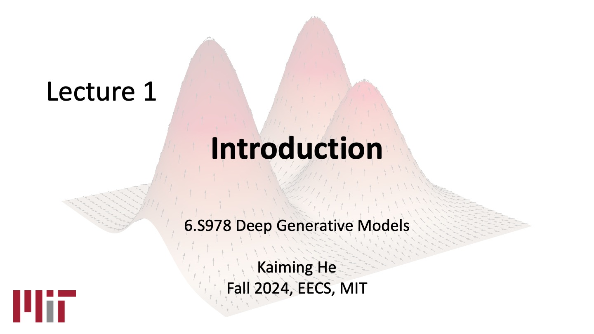
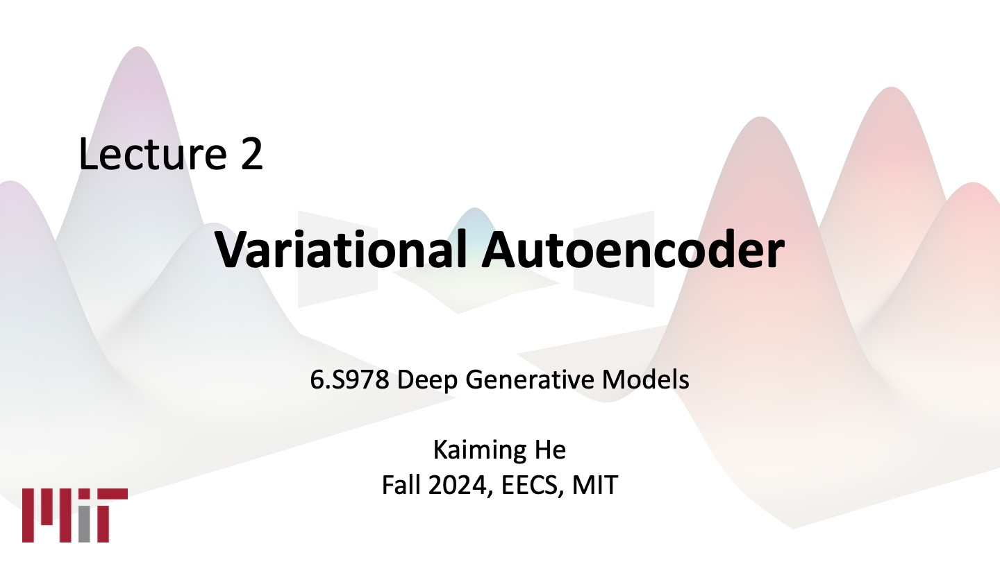
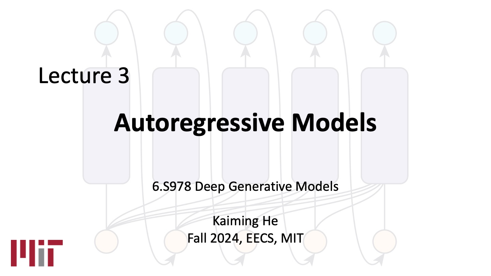

6.S978 Deep Generative Models
MIT EECS, Fall 2024 |
This schedule is preliminary and subject to change as the term evolves.
| Date | Topics | Course Materials | Assignments | ||
| Week 1 | |||||
| Thurs 09/05/2024 | Lecture: Introduction |
 slides |
|||
| Week 2 | |||||
| Tues 09/10/2024 | Reading: Modeling Image Prior |
Reading List:
|
Assignment #1 | ||
| Thurs 09/12/2024 | Lecture: Variational Autoencoder (VAE) |
 slides |
|||
| Week 3 | |||||
| Tues 09/17/2024 | Reading: Normalizing Flows |
Reading List:
|
|||
| Thurs 09/12/2024 | Lecture: Autoregressive (AR) Models |
 slides |
|||
| Week 4 | |||||
| Tues 09/24/2024 | Reading: Autoregressive (AR) Models |
Reading List: |
Assignment #1 Due Assignment #2 | ||
| Thurs 09/26/2024 | Reading: AR and tokenizers | <
Reading List:
|
|||
| Week 5 | |||||
| Tues 10/01/2024 | Reading: AR and Diffusion |
Reading List:
|
|||
| Thurs 10/03/2024 | Lecture: Generative Adversarial Network (GAN) | ||||
| Week 6 | |||||
| Tues 10/08/2024 | Reading: GAN 1 |
Reading List: TBA |
Assignment #2 Due Assignment #3 | ||
| Thurs 10/10/2024 | Reading: GAN 2 |
Reading List: TBA |
|||
| Week 7 | |||||
| Tues 10/15/2024 | No class (student holiday) | ||||
| Thurs 10/17/2024 | Lecture: Energy-based Models, Score matching, Diffusion Models | ||||
| Week 8 | |||||
| Tues 10/22/2024 | Reading: Score Matching 1 |
Reading List: TBA |
Assignment #3 Due Assignment #4 | ||
| Thurs 10/24/2024 | Reading: Score Matching 2 |
Reading List: TBA |
|||
| Week 9 | |||||
| Tues 10/29/2024 | Reading: Diffusion |
Reading List: TBA |
|||
| Thurs 10/31/2024 | Reading: Distilling Diffusion Models |
Reading List: TBA |
|||
| Week 10 | |||||
| Tues 11/05/2024 | Reading: Flow Matching |
Reading List: TBA |
Assignment #4 Due Assignment #5 | ||
| Thurs 11/07/2024 | Guest Lecture: Jun-Yan Zhu - Ensuring Data Ownership in Generative Models | ||||
| Week 11 | |||||
| Tues 11/12/2024 | Reading: Application - Videos |
Reading List: TBA |
|||
| Thurs 11/14/2024 | Reading: Application - 3D and Geometry |
Reading List: TBA |
|||
| Week 12 | |||||
| Tues 11/19/2024 | Reading: Application - Robotics |
Reading List: TBA |
Assignment #5 Due Assignment #6 | ||
| Thurs 11/21/2024 | Guest Lecture: Yang Song - Consistency Models | ||||
| Week 13 | |||||
| Tues 11/26/2024 | Reading: Application - Material Science |
Reading List: TBA |
|||
| Thurs 11/28/2024 | No class (Thanksgiving) | ||||
| Week 14 | |||||
| Tues 12/03/2024 | Reading: Application - Protein and Drug Design |
Reading List: TBA |
Assignment #6 Due | ||
| Thurs 12/05/2024 | Final Presentation 1 | ||||
| Week 15 | |||||
| Tues 12/10/2024 | Final Presentation 2 | ||||